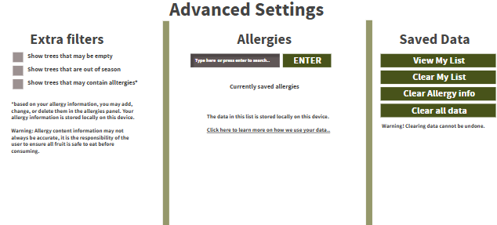
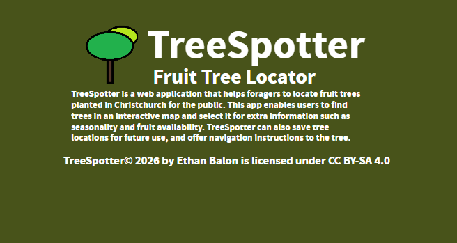

Welcome!
Type on the left search bar to search for a tree, or click enter to display all trees in your area.
Click the tutorial button to watch a video tutorial to help you learn how to use this app.
You may go back to the tutorial from the top menu bar at any time!
Note: TreeSpotter is still in the BETA development phase, some features may not be operational at the moment.
My List
| Tree ID | Name | Seasonality | Stock level | Coordinates | Navigate | Delete |
|---|

